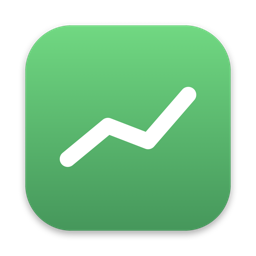
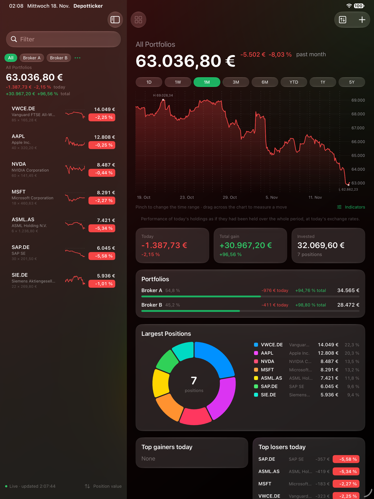
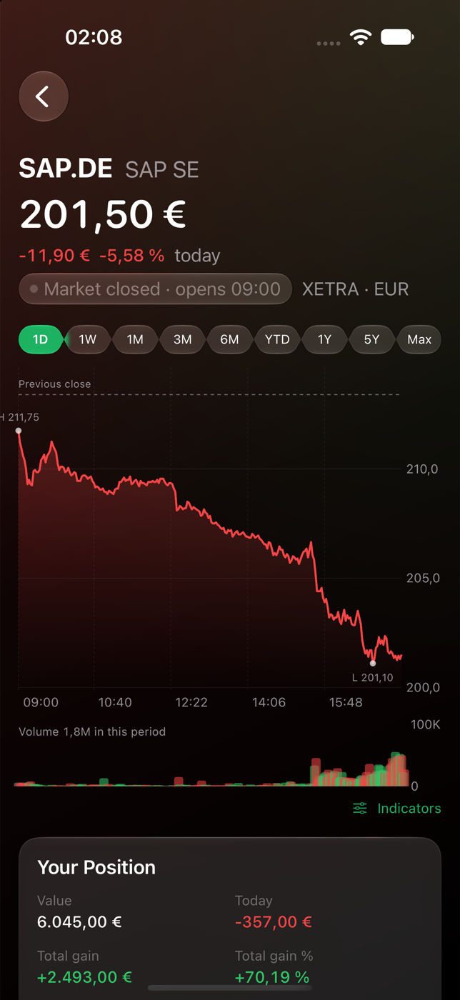

DepottickerDepotticker brings the positions from all your brokers into one clean app for Mac, iPhone and iPad: live prices, your real gains and losses in euros, and charts that are easy to read.
Version 0.1 · requires macOS 26 or later on Apple silicon · updates itself


Keep a portfolio per broker and see them together or one at a time. Positions held at several brokers are combined.
Value, today's change and total gain for every position, converted from the listing's currency including the day's currency move.
From one day to all time, with trading volume, high and low, moving average and your own average cost. Pinch to change the period, drag to measure a move.
See how today's holdings performed together over any period, like a fund of your own.
P/E, earnings per share, market cap, dividend yield, analyst rating and the latest headlines for each stock.
Today's change in the Mac menu bar, and small, medium and large widgets for the desktop and Home Screen.
No account, no tracking. Amounts hide automatically during calls and screen sharing, and windows can be kept out of recordings.
Import positions from a spreadsheet, export them with current values, or start from the built-in template.
A built-in MCP server lets assistants such as Claude read your portfolio and update positions when you ask them to.
Download the zip, open it and drag Depotticker into your Applications folder. The app checks for new versions by itself; you can also choose Depotticker › Check for Updates… at any time.
Questions? The help pages cover every feature.